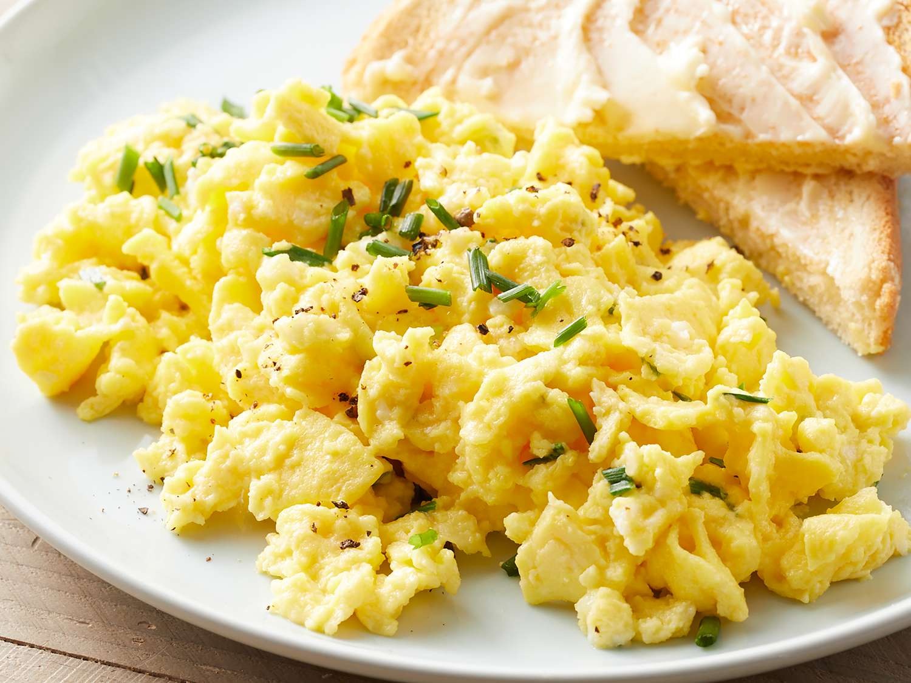

Cottage Cheese Eggs

Making Cottage Cheese Eggs
Looking to get more protein in your breakfast without protein bars or shakes? Try these High-Protein Scrambled Eggs with
Cottage Cheese. The eggs come out fluffy and delicious, and it only takes about five minutes to make. Like yogurt, I
always have cottage cheese in my fridge since it’s such an easy source of protein. Sometimes I add it to my frittatas or
waffles or make it the base of a breakfast bowl . Whisking cottage cheese into my scrambled eggs is almost too simple but
definitely worth sharing. This is a great recipe for people who don’t like the taste of cottage cheese, but want to
incorporate it into your meals because you can’t taste it.
Ingredients
- Four large eggs
- 1/2 Cup cottage cheese
- 1/8 Teaspoon salt
- Fresh ground black pepper
- 2 Tbsp extra-virgin olive oil
- If you want, you can add any other veggies like onion, bell pepper, mushroom, or spinach
Making Cottage Cheese Eggs
- If veggies that should be sauteed are being added, saute them first.
- In a medium bowl, whisk the eggs, cottage cheese, kosher salt and black pepper, to taste with a fork.
- If not adding veggies, heat a medium nonstick skillet over medium-low heat and spray with oil. When warm,
pour the eggs in.
- Slowly scrape sections of eggs to the center of the pan as the bottom starts to set, creating soft
folds for about 1 1/2 to 2 minutes total until just set.
- Remove from the heat and serve.